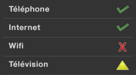
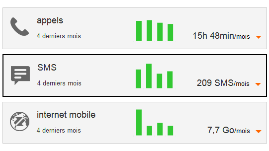
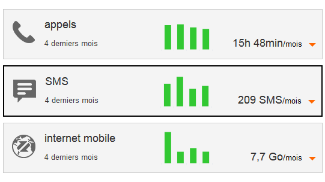
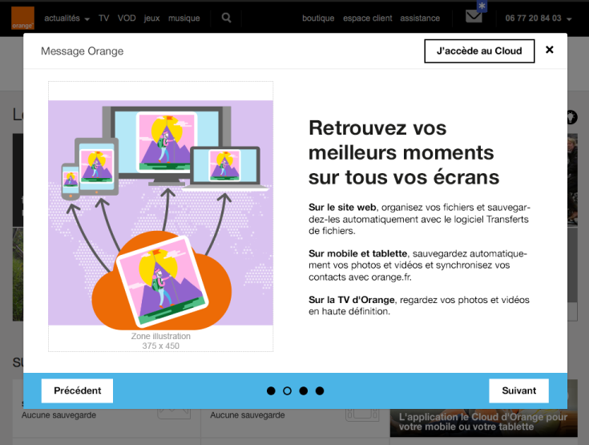

Recommandations accessibilité Orange pour le web
L’accessibilité, un avantage pour tous, une nécessité pour certains !
Définition de l’accessibilité web
C’est un service web utilisable par tous
- Personnes valides
- Seniors
- Personnes en situation de handicap (temporaire ou permanent)
et dans tous les contextes
- Avec tous types de matériel : navigateurs, PC, Mac, téléphones mobiles, tablettes
- Dans un contexte dégradé : mauvaise luminosité, touchpad en mobilité, etc.
- Avec des logiciels spécifiques de compensation du handicap
Organisation de ce site
Critères incontournables
Liste des critères principaux selon votre profil, basés sur un sous-ensemble des recommandations WCAG 2.0 niveau AA. Un bon moyen de prendre connaissance des principaux critères à respecter pour s’engager vers une démarche de mise en accessibilité progressive.
Ensemble des exigences
Section à destination des développeurs. Tout ce qu’il faut savoir pour coder accessible et pour effectuer les tests permettant de valider ses développements.
Méthodes et outils de test
Pour ceux qui veulent vérifier l’accessibilité de leurs pages avec des outils plus ou moins automatiques. Enfin, tout l’outillage méthodologique et technique pour évaluer ses pages.
Outils Orange open source
Présentation de la bibliothèque Boosted et du service Confort+.
Exemples
Des exemples didactiques pour certains types de composants ou d’éléments d’interface particulièrement délicats à rendre accessibles et fréquemment utilisés. Tout y est expliqué, il n’y a plus qu’à se laisser guider !
Ces exemples utilisent la librairie Boosted. Cette librairie basée sur Bootstrap permet de réaliser rapidement un site web responsive et accessible aux couleurs de la charte Orange.
Liste des critères incontournables
Ce socle de critères destiné aux sites et applications web Orange permet d’éviter les principales erreurs d’accessibilité. Il s’agit d’un sous-ensemble des exigences d’accessibilité.
La mise en œuvre de ce socle ne permet pas d’obtenir à coup sûr un site accessible, mais pose les fondations qui permettent de s’engager dans une démarche de mise en accessibilité progressive.
Le respect de la charte Orange (Design for digital platforms Guideline), disponible sur le site de la marque Orange est un prérequis à l’utilisation de ce socle. Certains points déjà présents dans la charte Orange (utilisation des couleurs, alignement du texte…) n’ont pas été repris dans cette liste de critères.
Deux versions sont disponibles
- La première version n’aborde pas le code, elle s’adresse aux concepteurs de produits, designers, responsables de projet, etc.
- La seconde version aborde le code et s’adresse aux développeurs, aux responsables techniques, aux équipes de validation, qualification, etc.


Critères incontournables pour le développement
1. Donner un titre aux pages
Cible : tout le monde, et en particulier les personnes déficientes visuelles.
Quand : dès la conception et pendant le développement.
Description :
Donner à chaque page un titre qui lui est spécifique et qui reflète son contenu ou sa fonction (balise <title>).
Le titre de la page est le premier élément lu par la synthèse vocale, il doit permettre d’identifier formellement la page sur laquelle on se trouve.
À vérifier :
- Bien qu’il n’y ait pas de règle, en général, on va de l’information la plus spécifique vers la moins spécifique (ex. : nom de la page courante - nom du site). Dans d’autres contextes d’utilisation pour lesquels l’utilisateur a de nombreuses applications ou sites ouverts en même temps, il vaut mieux aller de l’information la plus générale vers la plus spécifique (ex.: nom du site - nom de la page).
- Lorsque le contenu de la page est modifié dynamiquement (affichage du résultat d’une recherche, erreurs dans un formulaire, action utilisateur ajoutant du contenu…), le titre de la page doit refléter cette modification du contenu.
Objectif utilisateur :
Permettre aux utilisateurs d’identifier le sujet d’une page, de se repérer et se faire une idée précise du contenu de la page sans avoir à le lire. C’est, notamment, le premier élément vocalisé par un lecteur d’écran.
Exemple valide : <title>Accueil - Espace client Orange</title>
Exemple non-valide :<title>Accueil</title>
Référence : WCAG 2.4.2
2. Donner des titres aux rubriques
Cible : tout le monde, et en particulier les personnes déficientes cognitives, avec des difficultés pour lire et déficientes visuelles.
Quand : dès la conception, à la rédaction du contenu et pendant le développement.
Description :
Identifier les balises de titres à utiliser (balises HTML h1 jusqu’à h6) pour structurer le contenu des pages.
Les personnes malvoyantes naviguant à l’aide d’un lecteur d’écran peuvent accéder à la liste des titres de la page pour naviguer rapidement.
Tout comme dans un fichier Word, il est possible d’utiliser la table des matières si des titres ont correctement été positionnés à l’intérieur du document.
À vérifier :
- Les titres doivent être pertinents et non vides.
- Il ne doit pas exister de saut dans la hiérarchie des titres (on ne passe pas directement d’un titre
h2à un titreh4). - On peut mettre plusieurs
h1par page (se limiter tout de même à deux dans la majorité des cas). - Les lecteurs d’écran ne prennent pas en compte les titres masqués (
visibility: hidden;,display: none;ouaria-hidden). - Le contenu généré dynamiquement doit aussi respecter cette exigence.
Objectif utilisateur :
- Pour tous les utilisateurs : améliorer la structure de la page et de son contenu.
- Pour les utilisateurs déficients visuels, déficients cognitifs et difficultés de lecture : faciliter la navigation et l’accès au contenu.
Objectif technique :
- Pour les moteurs de recherche : améliorer le référencement.
Exemple valide :
Un titrage de page cohérent et pertinent :
<h1>Accueil – Orange</h1>
<h2>Les actualités</h2>
<h2>La fibre arrive !</h2>
<h3>Êtes-vous éligible ?</h3>
Exemple non-valide :
Un titrage de page avec un saut de niveau h2->h4 :
<h1>Accueil – Orange</h1>
<h2>Les actualités</h2>
<h2>La fibre arrive !</h2>
<h4>Êtes-vous éligible ?</h4>
Référence : WCAG 1.3.1
3. Assurer un contraste suffisant entre texte et fond
Cible : tout le monde, en particulier les utilisateurs sur mobile et tablette, les personnes malvoyantes, éprouvant des difficultés de lecture ou avec un déficit d’attention et les seniors.
Quand : dès la phase de conception et lors du développement.
Description :
Le niveau de contraste entre le texte et l’arrière-plan doit être suffisamment élevé.
Un niveau de contraste insuffisant sera préjudiciable pour les utilisateurs ayant des difficultés visuelles ainsi que pour les utilisateurs de mobiles et tablettes se trouvant dans un environnement très lumineux.
Exemple non valide :
Le texte « film | 20h40… » ne présente pas un contraste suffisant. Celui-ci ne sera pas lisible par tous les utilisateurs.

À vérifier :
- Le contraste entre la couleur du fond et celle du texte doit être 4.5:1 minimum et ceci également pour du texte sous forme d’image porteur d’information.
- Pour des applications principalement utilisées en web mobile ou en mobilité, le niveau de contraste des principaux éléments doit être de 7:1 afin d’assurer une bonne lisibilité pour tous.
- Les liens doivent être facilement identifiables par rapport au reste du texte.
Objectif utilisateur :
Faciliter la lecture à tous les utilisateurs, déficients visuels ou personnes dans un environnement lumineux défavorable (en mobilité).
Outil :
L’application Colour Contrast Analyser permet de mesurer rapidement des niveaux de contraste de couleurs (gratuit pour Mac et Windows).
Référence : WCAG 1.4.3
4. Ne pas utiliser la couleur ou l’information sensorielle comme seule source d’information
Cible : tout le monde, en particulier les daltoniens et plus généralement les personnes malvoyantes ou ayant une déficience cognitive, auditive et les seniors.
Quand : dès la phase de conception et lors du développement.
Description :
Ne pas utiliser la couleur ou une information sensorielle (forme, taille, son, orientation, localisation visuelle…) comme la seule façon de véhiculer de l’information, d’indiquer une action, de solliciter une réponse ou de distinguer un élément. L’information fournie par un changement de couleur ou une information sensorielle doit être complétée par une information textuelle (alternative) ou/et structuration sémantique.
À vérifier :
- Faire une capture d’écran et la passer en noir et blanc. La perte des couleurs ne doit pas entraîner de difficulté dans la navigation, ni provoquer de perte d’information.
- Couper le son, le niveau d’information doit rester identique.
Objectif utilisateur :
Permettre aux utilisateurs ne distinguant pas les couleurs ou l’information sensorielle (les daltoniens, déficients visuels, déficients auditifs, utilisateurs de mobile en luminosité extérieure, en milieu bruyant…), d’accéder tout de même à l’information par d’autres moyens.
Exemple :
Pour un graphique type camembert, où chaque partie est colorée différemment, ajouter par exemple une texture différente pour les identifier sans la couleur.
Exemple valide :

Exemple non-valide :
Cet exemple n’est pas valide, car l’information est transmise uniquement par la couleur.
Référence : WCAG 1.4.1
5. Mettre en place des listes
Cible : tout le monde, et en particulier les personnes déficientes visuelles, avec des déficiences cognitives.
Quand : dès la conception et à la rédaction du contenu.
Description :
La page, si besoin, doit posséder des listes sémantiquement pertinentes. Sémantiser le contenu HTML en utilisant les balises :
olpour les listes ordonnées,ulpour les listes non ordonnées,lipour les éléments de liste.
À vérifier :
- Il ne doit pas y avoir de liste vide.
- Il ne doit pas y avoir de liste avec un seul élément (car ce n’est pas une liste, à moins que cette liste ne soit générée dynamiquement !).
Objectif utilisateur :
Utiliser des listes permet d’identifier, regrouper et présenter séquentiellement des éléments de même nature.
Objectif technique :
Oblige à la structuration cohérente du contenu par le créateur du site.
Référence : WCAG 1.3.1
6. Séparer le contenu de l’interactivité et de la présentation
Cible : tout le monde, et en particulier les personnes déficientes visuelles, avec des difficultés pour lire ou avec un déficit d’attention.
Quand : lors du développement.
Description :
Séparer strictement le contenu (HTML), l’interactivité (Javascript) et la présentation (CSS).
À vérifier :
- Ne pas faire de mise en pages en tableaux, ceux-ci étant réservés aux données tabulaires.
- Éviter d’utiliser des images pour afficher du texte, préférer les habillages CSS.
- Utiliser des classes CSS plutôt que manipuler des styles CSS en ligne dans le code HTML.
- Ne pas utiliser les pseudo éléments CSS (::before, ::after…) pour afficher du contenu porteur d’information
- Ne pas câbler des événements Javascript directement dans le code HTML mais gérer l’interactivité dans un script ou un fichier JS à part.
Objectif utilisateur :
Permettre aux utilisateurs, via leur agent utilisateur ou aide technique (par exemple, leur navigateur), de modifier le rendu visuel de la page (grossissement, couleur, position…). Par exemple, de grossir le texte sans problème de mise en pages.
Objectif technique :
Améliore globalement la maintenabilité.
Référence : WCAG 1.3.1, 1.4.5
7. Valider le code
Cible : tout le monde.
Quand : pendant et à la fin du développement.
Description :
Valider la syntaxe du code HTML (notamment l'absence de balise non fermée, d'id dupliqué…).
À vérifier :
Dans le code HTML s’assurer que :
- les éléments ont des balises de début et de fin,
- les éléments sont imbriqués conformément à leurs spécifications,
- les éléments ne contiennent pas d’attributs dupliqués,
- chaque
IDest unique.
Objectif utilisateur :
Des erreurs de validation peuvent empêcher l’accès à certains contenus.
Objectif technique :
- Assurer l’interopérabilité, la maintenabilité du code HTML.
- Accroître la compatibilité avec les aides techniques.
Référence : WCAG 4.1.1
Outil : validateur HTML et CSS du W3c
8. Indiquer la langue principale et les changements de langue
Cible : pour tous, et en particulier les personnes déficientes visuelles.
Quand : lors du le développement.
Description :
Spécifier la langue principale du document grâce à l’attribut lang dans la balise html.
Préciser également la langue d’un contenu exprimé dans une langue autre que la langue principale, en utilisant l’attribut lang dans l’élément HTML contenant l’expression en langue étrangère.
À vérifier :
Pour les mots ou les expressions en langue étrangère passés dans l’usage courant (Google, newsletter…) ou les noms propres, ne pas indiquer de changement de langue.
Objectif utilisateur :
Cet attribut permet d’indiquer à la synthèse vocale la langue à utiliser.
Objectif technique :
Permettre aux moteurs de recherche d’identifier la langue d’une page pour améliorer le référencement naturel.
Exemple pour une page en français :
- pour du HTML :
<html lang="fr"> - pour du XHTML :
<html xmlns="http://www.w3.org/1999/xhtml" xml:lang="fr" lang="fr">
Exemple de changement de langue : découvrir Orange <span lang="en">live</span> TV
Référence : WCAG 3.1.1, 3.1.2
9. Associer une étiquette pertinente à chaque champ de formulaire
Cible : tout le monde, et en particulier les personnes déficientes visuelles et cognitives, avec un déficit d’attention et les utilisateurs de tactiles (mobile et tablette).
Quand : lors de la conception et lors du développement.
Description :
Chaque champ de formulaire doit être accompagné d’un libellé permettant d’identifier le rôle du champ, le type de donnée et le format attendu.
Le libellé doit être proche visuellement du champ afin qu’on fasse facilement le lien entre eux (notamment pour les utilisateurs de zoom ou de loupe logicielle, voire sur mobile).
Chaque libellé doit être inclus dans une balise label, elle-même associée au champ de formulaire grâce à un attribut for renseigné, reprenant la valeur de l’id du champ.
Dans certains cas, il semble inutile d’accompagner le champ de formulaire d’un libellé (champ de recherche accompagné d’un bouton en forme de loupe par exemple). Dans ce cas, prévoir tout de même un libellé, l’associer au champ de formulaire et le rendre invisible à l’écran (utiliser une classe de masquage accessible), ainsi celui-ci sera quand même vocalisé par les lecteurs d’écran.
L’attribut title positionné sur une balise de champ de formulaire peut faire également office de libellé tout comme les attributs aria-label et aria-labelledby dans cet ordre de préférence.
À vérifier :
Pour tout élément de formulaire, le libellé est proche visuellement du champ qu’il identifie.
Pour les boutons radio et les cases à cocher, l’utilisation de la balise label est, parfois, à compléter par un autre dispositif (title, aria-labelledby, aria-label ou fieldset et legend).
Pour les champs obligatoires, ceci doit être précisé dans le label via une image, un symbole texte (* par exemple) ou du texte et/ou une propriété aria-required.
Objectif utilisateur :
Ne pas respecter cette exigence est un point bloquant pour tout utilisateur de synthèse vocale mais aussi de loupe logicielle car il ne sait pas quelle valeur entrer dans les champs. Pour les utilisateurs de mobiles et les déficients moteurs, cela permet d’activer ou de cliquer plus facilement sur les éléments de formulaire.
Exemple valide : 
Exemple non-valide : 
Exemple de formulaire accessible :
Consulter l’exemple de formulaire accessible pour plus d’informations.
Référence : WCAG 3.3.2
10. Détecter, identifier les erreurs et suggérer des corrections
Cible : tout le monde, et en particulier les personnes déficientes visuelles, cognitives, avec des difficultés pour lire ou ayant un déficit d’attention et les seniors.
Quand : lors de la conception et lors du développement.
Description :
Les erreurs sont automatiquement détectées, l’utilisateur est averti par la modification du titre de la page, l’élément de formulaire en erreur est identifié et l’erreur est décrite à l’utilisateur sous forme de texte. Si besoin, une correction est suggérée.
Enfin les libellés des messages d’erreur doivent être explicites.
À vérifier :
L’identification du champ en erreur ainsi qu’une éventuelle suggestion de correction peuvent être ajoutées dynamiquement à la balise label, en priorité, mais aussi à l’attribut title ou les attributs aria-label et aria-labelledby selon le contexte et les besoins.
Objectif utilisateur :
Guider l’utilisateur en cas d’erreurs permet d’améliorer la compréhension et la correction des erreurs, pour tous les utilisateurs, en particulier pour les novices sur internet, les seniors et les personnes déficientes cognitives.
Exemple valide : 
Exemple non-valide : 
Exemple de formulaire accessible :
Consulter l’exemple de formulaire accessible pour plus d’informations.
Référence : WCAG 3.3.1, 3.3.3
11. Fournir un équivalent textuel pour les images
Cible : tout le monde, et en particulier les personnes déficientes visuelles ou cognitives.
Quand : lors de la conception et lors du développement.
Description :
Mettre, dans toute balise img, un attribut alt pertinent :
- Pour les images cliquables : préciser la fonction / la cible du lien dans l’attribut
alt. - Pour les images porteuses d’information : mettre un
altdécrivant l’information contenue dans l’image. - Pour les images contenant du texte : mettre un attribut
altreprenant au moins le texte de l’image. - Pour les images décoratives : mettre un attribut
altvide. - Pour les images dont le contenu du
altserait trop long (schémas, graphes…), mettre à proximité de l’image à décrire, sa description sous forme de texte dans la page ou, un lien pointant vers une page HTML contenant cette description.
À vérifier :
Toute balise img doit posséder un attribut alt.
Pour les images non-porteuses d’information, il est préférable de les passer en image de fond CSS.
Pour les graphes, la solution peut être de mettre un lien sous l’image permettant d’accéder à un tableau de chiffres (le faire apparaître dans la même page ou sur une autre page).
Objectif utilisateur : Permettre l’accès à l’information incluse dans une image pour des utilisateurs qui n’y ont pas accès. Point bloquant : une image sans description textuelle est inexploitable par des personnes ayant des déficiences visuelles ou celles n’affichant pas les images (mobile, faible bande passante…).
Objectif technique :
Améliorer le référencement naturel.
Exemple valide :<a href="./home"><img src="logo_orange.jpg" alt="Retour à l’accueil"></a><img src="banner_bouquet_famille.png" alt="Bon plan, bouquet famille max à 2 euros par mois pendant 12 mois au lieu de 16 euros.">
Exemple d’alternative vide :
Dans l’exemple ci-dessous, le picto à droite n’a pas besoin d’être vocalisé puisque le texte situé à gauche apporte déjà l’information.
Renseigner l’attribut alt dans ce cas apporterait une information redondante.

<h3>Le service 24h garanti</h3><img src="service-24.png" alt="">
Référence : WCAG 1.1.1
12. Fournir un transcrit pour toute piste audio ou vidéo
Cible : tout le monde, et en particulier les personnes déficientes visuelles, cognitives et auditives et celles qui maîtrisent mal le français.
Quand : lors de la conception et lors du développement.
Description :
Fournir, pour toute piste audio ou vidéo porteuse d’information, un transcrit complet dans la page elle-même ou grâce à un lien à proximité de la piste audio ou vidéo.
À vérifier :
Un transcrit complet est le texte contenant l’ensemble des informations visuelles et auditives porteuses de sens.
Objectif utilisateur :
Fournir un moyen d’accès à l’information visuelle et auditive pour des personnes ne pouvant pas en bénéficier : malvoyants, aveugles, sourds, déficients cognitifs, ordinateur sans haut-parleurs, environnement lumineux ou bruyant.
Objectif technique :
Permet le référencement de tout contenu audio et vidéo.
Référence : WCAG 1.2.3
13. Structurer les tableaux de données
Cible : tout le monde, et en particulier les personnes déficientes visuelles.
Quand : dès la phase de conception et lors du développement.
Description :
Pour des données tabulaires :
- Utiliser l’élément
tableavec les éléments enfantsth(pour les cellules d’entêtes),td,tr. - Utiliser l’attribut
scopeavec la valeurrow/colpour associer les cellules d’en-têtes et les cellules de données ; pour des tableaux complexes, utiliser les attributsidetheaders. - Utiliser la balise
caption, une baliseh1àh6juste avant le tableau ou lier un texte proche du tableau via un attributaria-labelledbydans l’élémenttablepour associer un titre au tableau. - Mettre un attribut
summarydans l’élémenttablepour expliciter la structure dans le cas d’un tableau complexe. Attention cet attribut est déprécié en HTML5, il faudra donc rajouter, si besoin, le contenu dusummarydans le titre du tableau.
À vérifier :
- Rappel : ne pas utiliser de tableaux à des fins de mise en page.
- La légende (
caption) peut être remplacée par un titre de section (hx) placé avant le tableau. L’attributsummary, quant à lui, n’est nécessaire que pour des tableaux complexes. - Préférer scinder un tableau complexe en plusieurs tableaux plus simples.
- Mettre un résumé (attribut
summary) dans le tableau pour expliciter la structure dans le cas d’un tableau complexe. - Les balises
tbody,tfootettheadn’ont aucune influence sur l’accessibilité, il n’y a donc pas d’obligation à les utiliser.
Objectif utilisateur : Donner un résumé et un titre aux tableaux de données permet à tous d’en connaître l’objet rapidement sans avoir à le parcourir. Pour des utilisateurs déficients visuels, lier les cellules aux en-têtes permet de se situer dans le tableau et de comprendre les données de celui-ci.
Référence : WCAG 1.3.1
14. Utiliser des tailles relatives pour permettre le grossissement des textes
Cible : tout le monde, et en particulier les personnes déficientes visuelles, en mobilité et seniors.
Quand : lors du développement.
Description :
N’utiliser pour les tailles de police que des tailles relatives (em, rem, %) et pour les éléments conteneurs permettant l’agrandissement du texte seul de 200%.
À vérifier :
- Ne pas utiliser le pixel (
px) pour des tailles qui doivent pouvoir s’agrandir si l’on ne zoome que les textes. - Les éléments de formulaire doivent, eux aussi, posséder des tailles relatives pour s’agrandir.
- Penser à rendre fluides les conteneurs des textes afin qu’ils puissent s’agrandir lorsque les textes sont zoomés.
- Dans Firefox, faire Affichage>Zoom>Zoom texte seulement, utiliser les réglages du zoom pour atteindre 200%. Vérifier qu’il n’y a pas de perte d’information (disparition ou chevauchement de texte).

Objectif utilisateur : Permettre aux utilisateurs (malvoyants, en mobilité, seniors…) d’augmenter la taille du texte pour plus aisément accéder à l’information.
Exemple :
Voir l’exemple gestion du zoom, agrandissement de la taille du texte pour plus d’informations.
Référence : WCAG 1.4.4
15. Rendre l’intitulé d’un lien compréhensible hors contexte
Cible : tout le monde, et en particulier les personnes déficientes visuelles, cognitives ou ayant un déficit d’attention.
Quand : dès la phase de conception et lors du développement.
Description :
Rendre compréhensibles les intitulés des liens hors contexte pour tous les utilisateurs, en particulier les déficients visuels. Lors de la navigation avec un lecteur d’écran, il est possible d’accéder à la liste des liens de la page pour naviguer rapidement. Si votre page contient plusieurs liens « en savoir plus », il sera impossible de les différencier les uns des autres.
S’il n’est pas possible de rendre un lien plus explicite, faute de place, mais que l’intitulé du lien actuel est suffisant pour les personnes qui ont accès à l’écran, le texte du lien peut être complété par un contenu supplétif caché ou en utilisant un attribut aria-label ou aria-labelledby, spécifiquement pour les utilisateurs qui naviguent à l’aide d’un lecteur d’écran.
Par exemple dans l’image ci-dessous, les deux liens « valider » ne sont pas suffisamment explicites pour une personne déficiente visuelle. Par contre quand on voit l’écran, la disposition fait qu’il n’y a pas d’ambiguïté sur le rôle de chaque bouton.

Dans ce cas, ajouter un span en masquage accessible pour compléter l’intitulé du lien. Il ne sera pas affiché à l’écran mais sera vocalisé par les outils d’assistance.
Exemple :
<a href="…">valider<span class="masquage-accessible"> le paiement en plusieurs fois</span></a>
<a href="…">valider<span class="masquage-accessible"> le paiement en une seule fois</span></a>
Une autre solution consiste à utiliser un attribut aria-label ou aria-labelledby pour préciser l’intitulé du lien.
En complément de ces solutions, on pourrait ici également utiliser un attribut title pour faire apparaître une info-bulle « valider le paiement en plusieurs fois » au survol du lien avec la souris.
À vérifier : S’assurer que les liens isolés du contenu donnent une bonne information sur l’action déclenchée ou sa destination. Une page ne doit pas avoir plusieurs liens dont l’intitulé est le même, mais pointant sur des destinations/actions différentes.
Objectif utilisateur : Permettre à un utilisateur n’ayant pas accès au contexte visuel de connaître la destination du lien. Notamment important pour les utilisateurs naviguant grâce à une liste de liens extraite de la page (lecteurs d’écran) ou les utilisateurs de loupe logicielle qui ne voient qu’une fraction de la page.
Objectif technique : Expliciter les liens permet d’améliorer le référencement naturel.
Exemple valide :
Associer à un lien « cliquer ici », un texte caché hors écran : « commander votre téléphone ».
Exemple non-valide :
Liens « Cliquez ici » ou « Lire la suite… » sans plus de précision.
Référence : WCAG 2.4.9
16. Prévenir l’utilisateur de l’ouverture d’une nouvelle fenêtre
Cible : tout le monde, et en particulier les personnes déficientes visuelles, cognitives ou ayant un déficit d’attention.
Quand : dès la phase de conception et lors du développement.
Description :
Prévenir l’utilisateur de l’ouverture de toute nouvelle fenêtre en l’indiquant dans l’intitulé du lien.
En cas d’impossibilité avérée, utiliser un icône (image avec un alt) en ajoutant l’indication d’ouverture d’une nouvelle fenêtre ou juste « nouvelle fenêtre ».
En dernier recours, un texte en masquage accessible (hors écran).
Exemple :
Exemple d’icône pouvant indiquer l’ouverture d’une nouvelle fenêtre.
À vérifier : Pour tout lien ouvrant une nouvelle fenêtre ou un nouvel onglet, une mention du type « (nouvelle fenêtre) » est présente dans l’intitulé du lien, ou la mention « (nouvelle fenêtre) » est positionnée hors écran via CSS (masquage accessible).
Objectif utilisateur : Éviter l’ouverture inattendue de fenêtre, car cela peut gêner, perturber ou désorienter l’utilisateur. En particulier, pour des personnes en mobilité, utilisant des synthèses vocales ou présentant des déficiences cognitives.
Exemple valide :
Pour un lien pointant à l’extérieur du site et ouvrant une nouvelle fenêtre, l’intitulé du lien texte « Accéder au site orange.com (nouvelle fenêtre) ».
Pour une image-lien, un attribut alt="consulter les conditions générales d’utilisation (nouvelle fenêtre)".
Référence : WCAG 3.2.2
17. Permettre d’utiliser les principales fonctionnalités de l’application au clavier
Cible : tout le monde, et en particulier les personnes déficientes visuelles, motrices et en mobilité.
Quand : dès la phase de conception et lors du développement.
Description : Mettre en place des gestionnaires d’événements qui ne s’appuient pas uniquement sur des événements souris.
À vérifier : Toutes les actions importantes effectuées à la souris peuvent aussi l’être avec le clavier, quitte à proposer une alternative spécifique pour les interactions complexes (drag’n’drop, gestes à plusieurs doigts sur mobile …).
Objectif utilisateur : Permettre aux utilisateurs qui ne peuvent pas utiliser la souris (non ou malvoyants, déficients moteurs, web mobile, en mobilité…) d’accéder aux fonctionnalités principales de l’application au clavier.
Exemple valide :
- Un sous-menu qui se déroule au survol doit aussi se dérouler quand l’item de menu parent reçoit le focus clavier.
- Dans un webmail, un clic droit permet d’accéder à un menu pour vider la corbeille, un bouton « vider la corbeille » est également présent dans l’interface quand la corbeille est en cours de consultation.
Exemple non-valide :
Une fonctionnalité réalisable uniquement à l’aide du drag’n'drop et sans équivalent au clavier.
Référence : WCAG 2.1.1
18. Rendre le parcours du focus séquentiel et logique sans piège clavier
Cible : tout le monde, et en particulier les personnes déficientes visuelles, motrices, cognitives et en mobilité.
Quand : lors du développement.
Description :
Les éléments (liens, boutons, éléments de formulaire) doivent recevoir le focus dans un ordre logique pour l’utilisateur, sans que celui-ci ne reste piégé ou bloqué, même pour du contenu généré dynamiquement apparaissant ou disparaissant (modification du DOM, Ajax,…).
À vérifier :
- Pour valider cette exigence, la position du focus doit être visible à tout moment (propriété
outlineet:focusen CSS), voir exigence 19, ci-dessous. - Attention à l’ordre d’insertion des éléments dans le code HTML, cela a une influence sur l’ordre de déplacement du focus. Un élément présent à la fin du code source mais positionné tout en haut de la page via CSS sera le dernier à recevoir le focus.
- Pour la maintenabilité, éviter l’utilisation de l’attribut
tabindexavec des valeurs supérieures à 0.
Objectif utilisateur : Permettre la navigation logique sans piège au clavier dans les pages de l’application. Nécessaire pour les utilisateurs ne naviguant qu’au clavier (non ou malvoyants, déficients moteurs, déficients cognitifs, en mobilité).
Exemple non-valide :
Une page contenant un lecteur vidéo dont le focus peut entrer à l’intérieur du lecteur, mais ne peut pas en sortir (piège clavier).
Référence : WCAG 2.4.3, 2.1.2
19. Rendre visible le focus en toute circonstance
Cible : tout le monde, et en particulier les personnes déficientes visuelles, motrices, cognitives, ayant un déficit d’attention et en mobilité.
Quand : dès la phase de conception et lors du développement.
Description :
Ne pas masquer le focus et si nécessaire le rendre suffisamment visible (par exemple, en modifiant la propriété CSS outline) sur tous les éléments susceptibles de recevoir celui-ci (liens, boutons, éléments de formulaire). Vous pouvez même amplifier la visibilité du focus afin qu’il soit plus facilement identifiable.
Lorsqu’un effet est visible sur un élément lors du survol de la souris (:hover en CSS par exemple), cet effet doit être également affiché à la prise du focus (:focus).
À vérifier :
Dans beaucoup de frameworks front ou dans les reset CSS, la propriété outline (qui permet de visualiser le focus) est désactivée (outline: none;), penser à la redéfinir et vérifier que le focus est visible sur tous les éléments le recevant.
Objectif utilisateur : Permettre la visibilité du focus sur tous les éléments actifs, notamment pour les utilisateurs de clavier (déficients visuels, moteurs ou ceux ayant des déficiences d’attention et de mémorisation ou en mobilité).
Exemple valide :
Focus positionné sur le lien « Apple iPhone 5s argent ».

Exemple non-valide :
Focus positionné sur le lien « Apple iPhone 5s argent ».

Référence : WCAG 2.4.7
20. Fournir des liens d’évitement
Cible : utile pour les utilisateurs de mobile et tablette, les personnes déficientes visuelles et les personnes souffrant de handicap moteur ou en mobilité.
Quand : dès la phase de conception et lors du développement.
Description :
Mettre en place des liens d’accès direct (liens d’évitement) permettant d’accéder aux principales zones de la page (navigation, contenu, pied de page, recherche…) grâce à des liens internes vers des ancres (balises <a> ou tout élément HTML possédant un attribut id). En cas de fortes contraintes, ces liens peuvent être cachés et affichés uniquement lors de la navigation clavier.
À vérifier : Lorsqu’un lien d’évitement est activé, vérifier que le focus est bien déplacé (il ne s’agit pas uniquement de faire défiler la page au bon endroit).
Objectif utilisateur : Faciliter la navigation pour des utilisateurs naviguant au clavier, des utilisateurs malvoyants, utilisateurs de loupe logicielle ou de téléphone mobile.
Exemple :
Des liens d’évitement (« Aller à la navigation », « Aller au contenu ») sont disponibles sur ce site.
Pour les faire apparaître, placer le focus en haut de la page en cliquant sur la barre d’adresse de votre navigateur par exemple puis appuyer plusieurs fois sur la touche TAB.

Référence : WCAG 2.4.1
21. Permettre le contrôle des animations
Cible : les personnes malvoyantes, les personnes éprouvant des difficultés de lecture, d’attention ou de compréhension, les personnes épileptiques.
Quand : lors de la conception du service et lors de la conception graphique.
Description :
Tout contenu en mouvement, mis à jour, clignotant doit pouvoir être stoppé, caché ou mis en pause par l’utilisateur.
Par ailleurs, éviter autant que possible les flashs lumineux et les changements brusques de luminosité (cf. Le logo des JO provoque des crises d’épilepsie).
Il faut donc prévoir une pause au chargement de la page ou un moyen de stopper ou mettre en pause l’animation, la mise à jour ou le clignotement via un bouton par exemple.
Exemple : 
Un carrousel qui défile automatiquement doit se mettre en pause au survol de la souris ou lorsqu'il a le focus.
Il est également possible d’ajouter un bouton « pause » directement dans l’interface.
Référence : WCAG 2.2.2
22. S’assurer que les principales fonctionnalités sont utilisables avec les lecteurs d’écran
Cible : tout le monde, et en particulier les personnes déficientes visuelles.
Quand : lors du développement.
Description :
Respecter les recommandations générales d’accessibilité, utiliser en priorité les composants standards HTML, sinon, utiliser ARIA (Accessible Rich Internet Applications) pour les composants d’interface complexes.
À vérifier : S’assurer de l’absence de point bloquant avec les couples navigateur/lecteur d’écran (Firefox/NVDA, IE/Jaws, Safari/VoiceOver) dans les parcours utilisateurs (scénarios d’utilisation des principales fonctionnalités de l’application). En effet, les utilisateurs de lecteur d’écran sont les plus impactés par un manque d’accessibilité, on repère un grand nombre de problèmes en vérifiant cette exigence.
Objectif utilisateur : Permettre à l’utilisateur de lecteur d’écran d’accéder aux principales fonctionnalités de l’application, mais aussi s’assurer pour tous les utilisateurs de l’utilisabilité de l’application.
23. Conserver un ordre de tabulation logique lors d’une insertion ou d’une modification dynamique
Cible : tout le monde, et en particulier les personnes déficientes visuelles, cognitives ou avec un déficit d’attention.
Quand : lors du développement.
Description : Lorsqu’un élément est affiché suite à une interaction de l’utilisateur :
- celui-ci doit apparaître dans le code source juste après l’élément déclenchant (exemple : menu dépliant),
- ou le focus doit être déplacé sur un des premiers éléments du contenu généré (lien, bouton, titre, paragraphe…).
Lors de la disparition de contenu, le focus doit être redonné à l’élément déclenchant.
Par exemple à la fermeture d’une boîte de dialogue, le focus doit être repositionné sur l’élément qui a déclenché l’ouverture (bouton, lien, …).
Pour rappel : le contenu dynamiquement généré doit être accessible et donc respecter tous les critères d’accessibilité.
Il existe plusieurs solutions pour prévenir l’utilisateur en cas d’apparition/disparition de contenu :
- via du texte,
- en déplaçant le focus,
- en utilisant de l’ARIA.
Voir l’exemple de menu déroulant pour la mise en pratique de l’attribut aria-haspopup.
À vérifier :
- Le déplacement du focus s’effectue de manière logique (ordre de lecture naturel).
- L’ordre de lecture n’a pas été redéfini en utilisant des attributs
tabindex(avec des valeurs positives).
En pratique, l’attribut tabindex ne devrait être utilisé qu’avec deux valeurs :
tabindex="-1": pour interdire à un élément de recevoir le focus via la toucheTABet l’autoriser à recevoir le focus via Javascript.tabindex="0": pour rendre un élément focusable via la toucheTABet via Javascript.
Objectif utilisateur : Permettre à l’utilisateur, par exemple non ou malvoyant, de repérer l’apparition de nouveaux contenus et d’interagir avec ceux-ci.
Référence : WCAG 2.4.3
24. S’assurer que l’utilisateur garde le contrôle lors des interactions
Cible : tout le monde, et en particulier les personnes déficientes visuelles, cognitives ou avec un déficit d’attention.
Quand : dès la phase de conception et lors du développement.
Description : Ne pas induire de changement de contexte lors de la prise de focus, la saisie de données ou l’activation d’un élément de formulaire sans que ce changement soit prévisible (bouton) ou que l’utilisateur ait été averti.
Objectif utilisateur : Donner à tous les utilisateurs la maîtrise des changements de contexte lié à son action.
Exemple :
Un formulaire doit obligatoirement posséder un bouton d’envoi. Il ne doit pas être envoyé automatiquement après la saisie de l’utilisateur.
Référence : WCAG 3.2.1, 3.2.2
25. Identifier et conserver la cohérence des regroupements et des différentes régions de la page
Cible : tout le monde et en particulier les personnes déficientes visuelles, cognitives ou ayant des troubles de l’attention.
Description : Fournir des moyens d’identifier et de distinguer visuellement les différentes parties de la page et assurer la cohérence de ces régions ou regroupements dans toutes les pages.
À vérifier :
- S’assurer que les mécanismes de navigation sont toujours situés au même endroit dans un ensemble de page.
- S’assurer que les composants et les regroupements qui ont la même fonction sont identifiés (visuellement) de la même façon.
- S’assurer que les zones de la page sont clairement délimitées (bordures, filets, contraste suffisant…) ou qu’il y a un moyen de distinguer visuellement les groupes (sous-menu, liste déroulante…) ainsi que les différentes régions de la page.
Objectif utilisateur : Permettre aux utilisateurs d’identifier et localiser les éléments d’interface dans toutes les pages.
Exemple valide :
Ici, l’info bulle (tooltip) est délimitée par une bordure bien visible et suffisamment contrastée, permettant de bien identifier son contenu.
Exemple non-valide :
Il est très difficile d’associer les thèmes (« par région », « par genre »…) et les sous-thèmes en colonnes, d’autant plus que les filets horizontaux sont trop peu contrastés.
Exemple : Les balises HTML5 et landmarks ARIA
Pour donner une structure sémantique aux grandes régions d’une page, on peut utiliser les balises de structure HTML5 (main pour le contenu principal de la page, nav pour la navigation principale, header pour l’entête de page, footer pour le pied de page, aside pour du contenu complémentaire au contenu principal, et d’autres) même si leur support par les technologies d’assistance/navigateurs n’est pas total mais il s’améliore rapidement. On peut aussi utiliser, pour mettre en place cette structure de page, les landmarks ARIA (Accessible Rich Internet Applications) et là, le support est bien meilleur !
Mettre en place ce type de sémantique permet aux déficients visuels d’identifier et comprendre l’organisation, la structure globale de la page et donc de naviguer plus facilement.
Pour aller plus loin (en anglais) : HTML5 et landmarks ARIA
Pour une page en HTML5 :
<head>
…
<title>Titre de la page</title>
…
</head>
<body>
<header>
<h1>…</h1>
<nav>…navigation…</nav>
<p>en tête de page : logo, baseline…</p>
…
</header>
<main>
<p>contenu principal</p>
…
</main>
<aside>
<p>contenu annexe en relation avec le contenu principal</p>
…
</aside>
<footer>
<p>contenu du pied de page : copyright…</p>
…
</footer>
</body>
Pour une page qui n’est pas en HTML5, ajouter les landmarks ARIA :
<head>
…
<title>Titre de la page</title>
…
</head>
<body>
<div role="banner">
<h1>…</h1>
<div role="navigation">…navigation…</div>
<p>en tête de page : logo, baseline…</p>
…
</div>
<div role="main">
<p>contenu principal</p>
…
</div>
<div role="complementary">
<p>contenu annexe en relation avec le contenu principal</p>
…
</div>
<div role="contentinfo">
<p>contenu du pied de page : copyright…</p>
…
</div>
</body>
Référence WCAG : 3.2.3., 3.2.4
Critères incontournables pour la conception
1. Donner un titre aux pages
Cible : tout le monde et en particulier les personnes déficientes visuelles.
Quand : dès la conception et pendant le développement.
Description :
Donner à chaque page un titre qui lui est spécifique et qui reflète son contenu ou sa fonction (balise <title>).
Le titre de la page est le premier élément lu par la synthèse vocale, il doit permettre d’identifier formellement la page sur laquelle on se trouve.
À vérifier :
- Bien qu’il n’y ait pas de règle, en général (ouverture de nombreux onglets de multiples applications), on va de l’information la plus spécifique vers la moins spécifique (ex: nom de la page courante - nom du site). Pour le fenêtrage d’une multitude d’applications, le contexte d’utilisation est différent ; dans ce cas, on préférera aller de l’information la moins spécifique vers la plus spécifique.
- Lorsque le contenu de la page est modifié dynamiquement (affichage du résultat d’une recherche, erreurs dans un formulaire, action utilisateur ajoutant du contenu…), le titre de la page doit refléter cette modification du contenu.
Exemple valide :Accueil - Espace client Orange
Exemple non-valide :Accueil
2. Donner des titres aux rubriques
Cible : tout le monde et en particulier les personnes déficientes cognitives, ayant des difficultés pour lire ou déficientes visuelles.
Quand : dès la conception, à la rédaction du contenu et pendant le développement.
Description :
Identifier les balises de titres à utiliser (balises HTML h1 jusqu’à h6) pour structurer le contenu des pages.
Les personnes malvoyantes naviguant à l’aide d’un lecteur d’écran peuvent accéder à la liste des titres de la page pour naviguer rapidement.
Tout comme dans un fichier Word, il est possible d’utiliser la table des matières si des titres ont correctement été positionnés à l’intérieur du document.
À vérifier :
- Les titres doivent être pertinents, refléter la structure de l’information contenue dans la page.
- Il ne doit pas exister de saut dans la hiérarchie des titres (on ne passe pas directement d’un titre
h2à un titreh4). - On peut mettre plusieurs
h1par page (se limiter tout de même à deux dans la majorité des cas).
Exemple valide :
Un titrage de page cohérent et pertinent :
(Titre 1) Accueil - Orange
(Titre 2) Les actualités
(Titre 2) La fibre arrive !
(Titre 3) Êtes-vous éligible ?
3. Assurer un contraste suffisant entre texte et fond
Cible : tout le monde, en particulier les utilisateurs sur mobile et tablette, les personnes malvoyantes, éprouvant des difficultés de lecture ou avec un déficit d’attention et les seniors.
Quand : dès la phase de conception et lors du développement.
Description :
Le niveau de contraste entre le texte et l’arrière-plan doit être suffisamment élevé.
Un niveau de contraste insuffisant sera préjudiciable pour les utilisateurs ayant des difficultés visuelles ainsi que pour les utilisateurs de mobiles et tablettes se trouvant dans un environnement très lumineux.
Exemple non-valide :
Le texte « film | 20h40… » ne présente pas un contraste suffisant. Celui-ci ne sera pas lisible par tous les utilisateurs.
À vérifier :
- Le contraste entre la couleur du fond et celle du texte doit être 4.5:1 minimum, et ceci également pour du texte sous forme d’image porteuse d’information.
- Pour des applications principalement utilisées en web mobile ou en mobilité, le niveau de contraste des principaux éléments doit être de 7:1 afin d’assurer une bonne lisibilité pour tous.
- Les liens doivent être facilement identifiables par rapport au reste du texte.
Outil :
L’application Colour Contrast Analyser permet de mesurer rapidement des niveaux de contraste de couleurs (gratuit pour Mac et Windows).
4. Ne pas utiliser la couleur ou l’information sensorielle comme seule source d’information
Cible : tout le monde, en particulier les daltoniens et plus généralement les personnes malvoyantes ou ayant une déficience cognitive, auditive et les seniors.
Quand : dès la phase de conception et lors du développement.
Description :
Ne pas utiliser la couleur ou une information sensorielle (forme, taille, son, orientation, localisation visuelle…) comme la seule façon de véhiculer de l’information, d’indiquer une action, de solliciter une réponse ou de distinguer un élément. L’information fournie par un changement de couleur ou une information sensorielle doit être complétée par une information textuelle (alternative) ou/et structuration sémantique.
Exemple valide :
Exemple non-valide :

Cet exemple n’est pas valide, car l’information est transmise uniquement par la couleur.
À vérifier :
- Faire une capture d’écran et la passer en noir et blanc. La perte des couleurs ne doit pas entraîner de difficulté dans la navigation, ni provoquer de perte d’information.
- Couper le son, le niveau d’information doit rester identique.
5. Définir des équivalents textuels
Cible : les personnes déficientes visuelles, les personnes malentendantes ou déficientes cognitives et les moteurs de recherche.
Quand : dès la conception et pendant le développement.
Description :
Mettre en place des alternatives textuelles à tous les éléments informatifs non-textuels (alternatives aux images, icônes). De même prévoir des scripts ou des sous-titres pour les contenus audio ou vidéo.
Exemple :
Dans la capture ci-dessous, il faudrait par exemple prévoir dès la conception les textes alternatifs pour chaque bouton :
- « menu »,
- « réglages »,
- « chaîne précédente »
- « couper le son »
- …

6. Assurer la visibilité du focus
Cible : tout le monde et en particulier les personnes déficientes visuelles, motrices, cognitives et en mobilité.
Quand : lors de la conception graphique et lors du développement.
Description :
La position du focus clavier doit être visible à tous moment. Lorsqu’un élément cliquable reçoit le focus (lien, bouton …), ceci doit être visible pour l’utilisateur. Par défaut, le navigateur entoure l’élément avec des pointillés ou un cadre de couleur. Ce comportement peut être remplacé pour le rendre plus visible (assurer un contraste suffisant, par exemple) par un effet personnalisé, mais ne doit pas être supprimé. Les utilisateurs qui naviguent à l’aide du clavier (touche TAB) ont besoin de connaître la position du focus.
L’effet visible à la prise du focus doit être étudié dès la conception graphique au même titre que l’effet visible au survol du pointeur de la souris.
Exemples valides :
Dans les captures d’écran suivantes, le focus est positionné sur le lien « 209 SMS/mois ».
La première capture présente le comportement par défaut (focus représenté par des pointillés).
Dans la seconde capture, les pointillés ont été supprimés, mais un encadré permet d’indiquer de manière explicite l’emplacement du focus. 

7. Agrandissement de la taille du texte
Cible : tout le monde et en particulier les personnes déficientes visuelles, en mobilité et seniors.
Quand : lors de la conception graphique et principalement lors du développement.
Description :
La taille du texte doit pouvoir être multipliée par 2 (zoom du texte à 200% depuis les réglages du navigateur). A ce niveau de zoom, la présentation de la page peut être altérée, mais l’information doit rester lisible (pas de texte tronqué, ni superposé).
Bien que ceci doive être pris en compte pendant la phase de développement, on peut identifier les zones de l’écran qui doivent ou non s’agrandir en même temps que la taille du texte dès la phase de conception graphique. Par ailleurs, certains choix de design peuvent ou non faciliter la mise en place de ce critère lors du développement, il est donc important d’y réfléchir dès le départ.
Exemple :
La capture ci-dessous montre une page avec un zoom à 100%.
Exemple valide :
Avec zoom du texte à 200%.
Exemple non-valide :
Avec zoom du texte à 200%. Ici la hauteur de l’élément contenant le texte n’a pas été rendue variable en fonction de la taille des caractères.
8. Permettre le contrôle des animations
Cible : les personnes malvoyantes, les personnes éprouvant des difficultés de lecture, d’attention ou de compréhension, les personnes épileptiques.
Quand : lors de la conception du service et lors de la conception graphique.
Description :
Tout contenu en mouvement, mis à jour, clignotant doit pouvoir être stoppé, caché ou mis en pause par l’utilisateur.
Par ailleurs, éviter autant que possible les flashs lumineux et les changements brusques de luminosité (cf. Le logo des JO provoque des crises d’épilepsie).
Exemple :
Un carrousel qui défile automatiquement doit se mettre en pause au survol de la souris ou lorsqu’il reçoit le focus.
Il est également possible d’ajouter un bouton « pause » directement dans l’interface.
9. Libellé des liens
Cible : tout le monde et en particulier les personnes déficientes visuelles, cognitives ou ayant un déficit d’attention.
Quand : lors de la conception du service et lors de la conception graphique.
Description :
Les libellés des liens doivent être suffisamment explicites.
Dans les cas exceptionnels où ce n’est techniquement pas possible, prévoir quand même un libellé explicite qui sera utilisé par la synthèse vocale.
Exemple valide :
« découvrez nos offres »
Exemples non-valides :
« cliquez ici »
« en savoir plus »
10. Permettre la navigation au clavier
Cible : tout le monde, en particulier les personnes souffrant de handicap moteur ou visuel et en mobilité.
Quand : lors de la conception du service et lors du développement.
Description :
Toutes les fonctionnalités doivent être utilisables à l’aide du clavier uniquement. Le focus doit pouvoir être déplacé sur tous les éléments cliquables (à l’aide de la touche TAB).
Par ailleurs si des fonctionnalités sont spécifiques pour la souris (glisser-déposer, menu apparaissant au clic droit…), faire en sorte que celles-ci soient également disponibles via un autre moyen ailleurs dans l’interface (bouton, icône, menu…).
Exemple :
Dans un webmail, si un clic droit sur le dossier « corbeille » permet d’accéder à un menu pour vider la corbeille, cette option doit être également disponible via un bouton « vider la corbeille » ailleurs dans l’interface ou depuis un menu déroulant accessible au clavier.
11. Rendre utilisables les formulaires
Cible : tout le monde et en particulier les personnes déficientes visuelles.
Quand : lors de la conception et lors du développement.
Description :
Chaque champ de formulaire doit être accompagné d’un libellé permettant d’identifier le rôle du champ, le type de donnée et le format attendu. Ce libellé doit être proche visuellement du champ afin qu’on fasse facilement le lien entre eux (notamment pour les utilisateurs de zoom ou de loupe logicielle, voire sur mobile). Les champs en erreur doivent pouvoir être identifiés et, si besoin, suggérer une correction. Ceci s’applique aux champs de saisie, mais également aux autres types de champs (liste déroulante, bouton radio, case à cocher …). Au niveau du développement, ce libellé sera associé au champ de formulaire pour faciliter la navigation à l’aide d’un lecteur d’écran.
Exemple valide :
Exemple non-valide :
Dans certains cas, il semble inutile d’accompagner le champ de formulaire d’un libellé (champ de recherche accompagné d’un bouton en forme de loupe par exemple). Dans ce cas prévoir tout de même un libellé. Celui-ci ne sera pas affiché à l’écran mais sera tout de même associé au champ de formulaire lors du développement pour faciliter la navigation à l’aide d’un lecteur d’écran.
Enfin les libellés des messages d’erreur doivent être explicites.
Exemple valide :
Exemple non-valide :
12. Éviter les boites de dialogues et l’ouverture de nouvelles fenêtres
Cible : les seniors, les personnes déficientes cognitives, malvoyantes ou en mobilité.
Quand : lors de la conception et lors du développement.
Description :
Éviter autant que possible les actions qui ouvrent une nouvelle fenêtre (ou un nouvel onglet) du navigateur. Si un lien déclenche l’ouverture d’une nouvelle fenêtre, il faudra lors du développement faire en sorte que le texte « nouvelle fenêtre » soit vocalisé par les lecteurs d’écran, afin que les personnes malvoyantes sachent qu’une nouvelle fenêtre s’ouvre.
De même éviter le recours systématique aux boîtes de dialogue pour présenter des informations dans les pages (présentation du service …). Celles-ci posent souvent des problèmes d’accessibilité pour les personnes qui naviguent au clavier ou au lecteur d’écran, problèmes qui nécessiteront une attention particulière lors de la phase de développement.
Exemple non-valide :
Dans l’exemple ci-dessous le recours à une boîte de dialogue n’est pas justifié. L’utilisation d’un page web standard permettrait :
- de laisser plus d’espace au contenu (en supprimant les marges autour de la boite de dialogue),
- de pouvoir utiliser le bouton « précédent » du navigateur pour revenir en arrière lors de la navigation entre les différentes pages de la boite de dialogue,
- de faciliter l’affichage sur les petits écrans,
- d’éviter des problèmes d’accessibilité pour les personnes qui naviguent à l’aide du clavier ou à l’aide d’un lecteur d’écran,
- d’alléger le poids de la page et le temps de chargement, car dans cet exemple la page derrière la boite de dialogue doit être chargée.

13. Fournir des liens d’évitement
Cible : utile pour les utilisateurs de mobile et tablette, les personnes déficientes visuelles et les personnes souffrant de handicap moteur ou en mobilité.
Quand : dès la phase de conception et lors du développement.
Description :
Fournir des liens d’évitement du type « Aller au contenu » sur chaque page. Ceux-ci facilitent la navigation pour les personnes utilisant le clavier, en mobilité ou navigant à l’aide d’un lecteur d’écran. En cas de fortes contraintes, les liens peuvent être masqués à l’écran et apparaître uniquement lors de la navigation au clavier.
Exemple :
Des liens d’évitement (« Aller à la navigation », « Aller au contenu ») sont disponibles sur ce site.
Pour les faire apparaître, placer le focus en haut de la page en cliquant sur la barre d’adresse de votre navigateur par exemple, puis appuyer plusieurs fois sur la touche TAB.
14. Identifier et conserver la cohérence des regroupements et des différentes régions de la page
Cible : tout le monde et en particulier les personnes déficientes visuelles, cognitives ou ayant des troubles de l’attention.
Description : Fournir des moyens d’identifier et de distinguer visuellement les différentes parties de la page et assurer la cohérence de ces régions ou regroupements dans toutes les pages.
À vérifier :
- S’assurer que les mécanismes de navigation sont toujours situés au même endroit dans un ensemble de page.
- S’assurer que les composants et les regroupements qui ont la même fonction, sont identifiés (visuellement) de la même façon.
- S’assurer que les zones de la page sont clairement délimitées (bordures, filets, contraste suffisant…) ou qu’il y a un moyen de distinguer visuellement les groupes (sous-menu, liste déroulante…) ainsi que les différentes régions de la page.
Objectif utilisateur : Permettre aux utilisateurs d’identifier et localiser les éléments d’interface dans toutes les pages.
Exemple valide :
Ici, l’info bulle (tooltip) est délimitée par une bordure bien visible et suffisamment contrastée, permettant de bien identifier son contenu.
Exemple non-valide :
Il est très difficile d’associer les thèmes (« par région », « par genre »…) et les sous-thèmes en colonnes, d’autant plus que les filets horizontaux sont trop peu contrastés.
Exigences accessibilité web Orange
Le référentiel WCAG
Pour les exigences d’accessibilité interne d’Orange, nous avons choisi de nous appuyer sur les Web Content Accessibility Guidelines v2 (WCAG 2). Il s’agit des recommandations internationales éditées par le groupe de travail Web Accessibility Initiative (WAI) du World Wide Web Consortium (W3C) qui sont aussi les normes ISO 40500:2012.
Le niveau d’accessibilité demandé à toute interface HTML par le groupe Orange est le respect des critères du niveau AA des Web Content Accessibility Guidelines (WCAG) 2.0, sans point bloquant suite à un test utilisateur d’aide technique pour les principaux scénarios d’utilisation des fonctionnalités du site ou de l’application.
Pour les solutions à mettre en place afin de respecter cet objectif, nous vous conseillons la consultation des critères incontournables et des exemples de ce site. Vous pouvez aussi utiliser les notices Accede-Web cf. ci-dessous.
Le référentiel général d’accessibilité des administrations (RGAA)
Si vous êtes familiarisé avec le Référentiel Général d’Accessibilité des Administrations (RGAA), celui-ci peut être utilisé pour effectuer les tests d’accessibilité. Il s’agit du référentiel officiel permettant de s’assurer qu’un site d’état et de collectivités territoriales est en conformité avec l’article 47 de la loi de février 2005 pour l’égalité des droits et des chances, la participation et la citoyenneté des personnes handicapées.
Le RGAA est une méthode d’implémentation des Web Content Accessibility Guidelines v2 (WCAG 2). Un site conforme au RGAA est également conforme aux WCAG2.
Les notices Accede-Web
Le site Accede-Web propose d’excellentes notices sur l’accessibilité au format Web et PDF. Celles-ci sont très pratiques, pédagogiques et émanent de la société Atalan, d’un collectif de grandes entreprises ainsi que d’écoles et d’associations de personnes en situation de handicap.
Ces notices ont été traduites en anglais et font consensus dans le domaine de l’accessibilité numérique comme une source de bonnes pratiques, complète et de qualité. Ces notices sont mises à jour régulièrement pour coller à l’évolution des technologies (navigateurs, aides techniques…).


HTML5 & ARIA
Introduction
Les sites internet sont de plus en plus dynamiques (chargement asynchrone, génération dynamique de contenu) et interactifs (composants d’interface complexes : slider, datepicker…). Il est donc très difficile voire impossible de rendre ce genre de composants accessibles avec le HTML classique.
Même avec l’évolution due au HTML5, on manque encore d’informations sémantiques à fournir aux aides techniques (lecteurs d’écran, loupes logicielles…), la navigation clavier est souvent impossible, la gestion complexe du focus clavier est absente et les mises à jour des régions dynamiques ne sont pas signalées.
Qu’est-ce que c’est ?
Pour remédier à ces limitations, le W3c/WAI a officiellement publié une recommandation appelée ARIA, pour Accessible Rich Internet Applications, ainsi qu’une suite de documents traitant de l’utilisation d’ARIA.
ARIA est une sur-couche sémantique à base de couples attribut/valeur utilisables dans les langages de balisage tels que HTML, SVG, XML, etc. Cette recommandation est composée de rôles, d’états et de propriétés qui vont spécifiquement interagir avec les aides techniques (AT). Grâce à ARIA, on peut décrire des éléments et leurs comportements en HTML lorsqu’ils sont nativement non sémantiquement explicites, par exemple, des onglets, les arbres dépliants, des régions dynamiques, les info-bulles, les fenêtres modales. ARIA définit également comment doit se comporter un composant d’interface avec le clavier afin d’homogénéiser l’expérience des utilisateurs qui naviguent au clavier. ARIA prend tout son sens et exprime tout son potentiel lorsqu’il est utilisé dans du HTML5 .
Aria ne rajoute aucun comportement particulier ni aucune présentation visuelle aux composants d’interface. Il faut donc toujours assurer la mise en forme grâce aux CSS, le contrôle du contenu et la gestion de l’interactivité via Javascript.
Le support
Le support d’ARIA s’améliore constamment et est déjà présent depuis longtemps :
- Dans les navigateurs modernes (Firefox >=3.0, Chrome >=16, Safari >=4, Opera >=9.5, Internet Explorer 8 pour un support basique, Internet Explorer >=9 et Edge pour un support avancé).
- Dans les aides techniques (NVDA >=2010, Orca >= 2 + Firefox uniquement, VoiceOver OSX >=10.5, iOS >=4, JAWS >=8, Window-Eyes >=7, ZoomText 10 pour un support basique, ZoomText >=11 pour un support avancé).
De plus, l’efficacité optimale de la prise en charge d’ARIA dépend du couple navigateur / aide technique : Firefox avec NVDA, Jaws avec Internet Explorer et Safari avec VoiceOver, par exemple.
Faut-il l’utiliser ?
Globalement, ARIA améliore l’accessibilité pour des composants pas nativement présents en HTML (ou pas accessibles notamment certains éléments HTML5). La robustesse et l’interopérabilité d’ARIA sont maintenant suffisantes pour qu’une vingtaine de techniques WCAG 2.0 soient spécifiques à ARIA (contre 10 techniques HTML5). En conséquence, pour des applications Internet riches, l’ARIA est incontournable pour leur mise en accessibilité.
Dans tous les cas, il faut tester les développements sur les environnements cibles (couple navigateurs / aides techniques). C’est un gros travail absolument nécessaire pour les cas complexes car sur un site ou une application internet classique, il faut, à minima, tester avec Safari/VoiceOver, Jaws/Internet Explorer et Firefox/NVDA.
Dans un environnement maîtrisé (intranet), les environnements cibles sont connus et en nombre fini, on peut donc statuer plus facilement !
Webographie
- Page de synthèse sur « ARIA in HTML »
- W3c :
- Introduction à ARIA
- Spécification ARIA
- Mettre en place ARIA, attention « working draft »
- Utiliser ARIA en HTML (5) , attention « working draft »
- Techniques ARIA dans les WCAG 2
- Introduction à ARIA chez Site Point
- Introduction et liste de liens vers des sources sur ARIA
Méthodes et outils de test
Vous trouverez ci-dessous des articles décrivant les méthodes et outils utiles pour tester l’accessibilité de vos pages web.
Tests manuel et outils d’assistance
Navigation au clavier : Liste des principaux raccourcis pour naviguer au clavier dans une page web.
Agrandissement de la taille du texte : Un guide sur la gestion du zoom.
Navigation à l’aide d’un lecteur d’écran : Les principaux lecteurs d’écrans utilisés.
Outils de test automatisés
Extensions pour navigateur : Certaines extensions permettent d’effectuer des tests automatiques sur la page en cours de consultation.
Test des critères
Mesurer le niveau de contraste des couleurs : Présentation de l’outil Colour Contrast Analyser.
Accéder à la liste des titres de la page (balises H1 à H6) :
Les différentes façons d’accéder à la liste des titres d’une page.
Outils Orange open source
Voici la liste de nos outils open source pour le web :
- Orange Boosted : pour créer des sites web ou mobile accessibles aux couleurs de la charte Orange.
- Orange Confort+ : pour améliorer le confort de l’utilisateur pendant la consultation de votre site web.
Orange Boosted
Présentation
Orange Boosted est un framework HTML, CSS et Javascript basé sur le très populaire Twitter Boostrap. Il permet la mise en place rapide d’un site web responsive et accessible aux couleurs de la charte Orange.
Pourquoi l’utiliser ?
- Basé sur Twitter Boostrap
- À la charte Orange, la Brand
- Amélioré avec des composants plus accessibles
- Enrichi de composants spécifiques à Orange
- Illustré de pages d’exemples
- Open source sous Licence MIT
Site officiel
Orange Confort+
Présentation
Le service Orange Confort+ permet d’adapter l’affichage d’un site web pour améliorer le confort lors de la consultation. Il dispose d’un vaste choix de réglages qui peuvent améliorer le confort de tous les utilisateurs. Il apporte également une aide précieuse aux utilisateurs ayant un handicap moteur, visuel ou cognitif.
Vous pouvez tester le service en cliquant sur le lien « Confort+ » situé en haut à droite de cette page.
Ses principaux atouts :
- Utile pour tous les utilisateurs
- Prise en charge de différents handicaps
- S’intègre sur tous les sites web
- Également disponible sous forme d’extensions pour navigateur
- Open source sous Licence MIT

Extensions à installer dans votre navigateur
Site officiel
Mesurer le niveau de contraste des couleurs
Le niveau de contraste peut être mesuré simplement à l’aide de l’outil Colour Contrast Analyser.
Cet outil est disponible gratuitement pour Mac et Windows. Il permet de mesurer la différence de contraste entre deux couleurs (la couleur du texte et la couleur du fond). Celles-ci peuvent être sélectionnées à l’aide d’une pipette directement dans une page web, une image ou une application.

Navigation à l’aide du clavier
La navigation dans une page web doit être possible à l’aide du clavier seul, notamment pour les personnes qui ne peuvent pas utiliser de souris. Cette fonctionnalité est prise en charge directement par le navigateur. Il est tout de même important de vérifier son fonctionnement, car certains développements peuvent entraîner des difficultés pour naviguer correctement dans la page.
Pour tester si votre service est accessible à l’aide du clavier, vous pouvez tenter de naviguer sans votre souris. Toutes les fonctionnalités disponibles habituellement doivent rester accessible.
Rappel : le focus doit rester suffisamment visible sur tous les éléments recevant le focus.
Liste des raccourcis clavier principaux :
- La touche
TAB: pour faire avancer le focus. - Les touches
maj+TAB: pour faire reculer le focus. - La touche entrée pour activer l’élément qui a le focus (lien, bouton, menu…).
- La barre espace pour cocher/décocher une case à cocher.
- Les flèches directionnelles pour modifier la sélection des boutons radio, pour se déplacer dans une liste déroulante, ou faire défiler les ascenseurs (scrollbar) lorsque ceux-ci sont présents.
Remarque : sur Mac la navigation au clavier doit être activée au préalable.
Dans Safari : Edition > Préférences… > Avancées
Puis cocher la case « La touche TAB permet de naviguer parmi les objets des pages web ».
Accéder à la liste des titres de la page (balises H1 à H6)
Pour vérifier si des titres ont été correctement positionnés dans la page, il existe plusieurs solutions :
- Parcourir le code de la page à la main.
- Utiliser une extension telle que HeadingsMap pour Firefox, Wave pour Chrome ou Web Developper Toolbar.
- Accéder à la liste des titres depuis un lecteur d'écran (cf. chapitre lecteur d'écran).
La dernière solution reste la plus fiable, car les extensions ne prennent pas toujours en compte les CSS et les éventuels attributs ARIA positionnés sur les balises HTML.
Vous pouvez trouver des informations complémentaires dans l'article : navigation à l'aide d'un lecteur d'écran.
Navigation à l’aide d’un lecteur d’écran
Un lecteur d’écran (appelé aussi revue d’écran) est un logiciel de synthèse vocale utilisé par les personnes malvoyantes et non-voyantes. Il permet à l’utilisateur d’interagir avec l’ordinateur et d’écouter ce qui est affiché sous forme textuelle (le plus souvent) à l’écran. Il existe plusieurs lecteurs d’écran, les plus connus sont :
- NVDA : gratuit disponible pour Windows.
- JAWS : payant disponible pour Windows. En mode démonstration, vous pouvez l’utiliser 40 min, après quoi il faudra redémarrer votre ordinateur pour l’utiliser à nouveau.
- VoiceOver : disponible pour Mac. Il est gratuit et intégré directement au système MacOS.
Prise en main de NVDA
NVDA est un lecteur d’écran gratuit disponible pour Windows.
Installation
Télécharger le fichier d’installation de NVDA sur le site officiel.
La voix par défaut n’est pas de très bonne qualité mais elle est très réactive. Ce n’est pas indispensable, mais le téléchargement d’une voix de meilleure qualité est conseillé comme celle d’Hortense. Il suffit ensuite de se rendre dans les préférences de NVDA pour modifier les paramètres vocaux.
Configuration
Au premier démarrage, NVDA est configuré pour vocaliser tout ce que survole le pointeur de la souris. Ce mode est utilisé par certaines personnes malvoyantes qui ont des difficultés à lire les textes affichés à l’écran par exemple. Il est conseillé de désactiver cette option si vous utilisez NVDA pour faire des tests d’accessibilité sur vos pages. Pour désactiver ce mode de navigation, faites un clic droit sur l’icône de NVDA dans la barre Windows à côté de l’heure. Puis aller dans Préférences > Paramètres de la souris et désactiver la case « Activer le suivi de la souris ».
Enfin, il est conseillé de modifier le mode de lecture par défaut. Pour cela, se positionner sur une page web et utiliser le raccourci clavier suivant INS+v pour désactiver la « disposition telle qu’à l’écran » puis enregistrer cette configuration par défaut à l’aide du raccourci INS+Ctrl+c.
Navigation dans les pages Web
Voici les principaux raccourcis utiles pour tester la navigation au sein d’une page web à l’aide de NVDA :
- flèche haut et flèche bas pour avancer ou reculer dans la lecture de la page.
- flèche droite et flèche gauche pour avancer ou reculer d’un caractère
- Ctrl+Home pour se déplacer en haut de la page.
- Ctrl+End pour se déplacer en bas de la page.
- INS+F7 pour afficher la liste des titres et la liste des liens.
- Ctrl pour faire taire NVDA.
- INS+T pour faire lire le titre de la page.
- H et maj+H pour passer au titre suivant ou au titre précédent (balises de titres
H1àH6). - B et maj+B pour passer d’un bouton à l’autre.
- C et maj+C pour passer d’une liste déroulante à une autre (Combobox).
- D et maj+D pour naviguer parmi les landmarks ARIA.
- E et maj+E pour naviguer parmi les champs de texte.
- F et maj+F pour naviguer parmi les formulaires.
- G et maj+G pour naviguer parmi les images (Graphics).
- I et maj+I pour naviguer parmi les éléments d’une liste HTML.
- K et maj+K pour naviguer parmi les liens.
- L et maj+L pour naviguer parmi les listes HTML.
- M et maj+M pour naviguer parmi les frames et iframes.
- O et maj+M pour naviguer parmi les objets intégrés (Flash). Appuyer sur INS+espace pour commencer l’interaction. Echap pour terminer l’interaction.
- Q et maj+Q pour naviguer parmi les citations (
blockquote). - R et maj+R pour naviguer parmi les boutons radio.
- T et maj+T pour naviguer parmi les tableaux (
table). - X et maj+X pour naviguer parmi les cases à cocher.
- Barre espace pour cocher ou décocher une case à cocher.
- INS+maj+S permet de mettre en veille NVDA uniquement dans l’application en cours.
- INS+Q pour quitter NVDA.
À noter également que NVDA dispose d’une visionneuse de parole (Outils > Visionneuse de parole), celle-ci permet d’afficher tout ce qui est vocalisé.
Prise en main de Jaws
Jaws est un lecteur d’écran payant très utilisé, disponible pour Windows. Il est à utiliser en priorité avec Internet Explorer. En mode démonstration, vous pouvez l’utiliser 40 min, après quoi il faudra redémarrer votre ordinateur pour l’utiliser à nouveau.
Installation
Vous pouvez télécharger Jaws directement depuis le site de l’éditeur Freedom Scientific.
Navigation dans les pages Web
Voici les principaux raccourcis utiles pour tester la navigation au sein d’une page web à l’aide de Jaws :
- flèche haut et flèche bas pour avancer ou reculer dans la lecture de la page.
- INS + T pour faire lire le titre de la page.
- INS + F5 pour afficher la liste des champs de formulaire.
- INS + F6 pour afficher la liste des titres de la page.
- INS + F7 pour afficher la liste des liens.
- Barre espace pour cocher ou décocher une case à cocher.
- Ctrl pour faire taire Jaws.
Prise en main de VoiceOver
VoiceOver est le lecteur d’écran disponible sur Mac. Celui-ci nécessite aucune installation puisqu’il est intégré directement au système.
Pour pouvez activer VoiceOver depuis les Préférences systèmes > Accessibilité. Ou directement en utilisant le raccourci Commande + F5.
Navigation dans les pages web
Au démarrage de VoiceOver, celui-ci propose un guide interactif permettant d’apprendre les principaux raccourcis clavier. Il est recommandé de le parcourir.
Voici néanmoins les raccourcis principaux :
- Ctrl + Option + flèche droite et Ctrl + Option + flèche gauche pour avancer ou reculer dans la lecture de la page.
- Ctrl + Option + U pour accéder à la liste des titres, liens, champs de formulaires… (utiliser les flèches gauche et droite pour naviguer entre les différentes listes).
- Ctrl pour faire taire VoiceOver.
- Ctrl + Option
Extensions pour navigateur
Certaines extensions permettent d’effectuer des tests automatiques sur la page en cours de consultation.
aXe accessibility audit
aXe est une extension disponible pour Chrome et Firefox permettant d’effectuer une série de tests basés sur les WCAG.

Wave toolbar
Wave toolbar est une barre d’extension pour Chrome. Tout comme aXe, elle permet d’effectuer une série de tests d’accessibilité sur la page en cours. A la différence de ce dernier qui affiche les erreurs dans un onglet de l’inspecteur web, ici les erreurs sont affichées directement dans la page. Il existe un bookmarklet (ou favlet) pour Wave.

Agrandissement de la taille du texte
Comment on teste ?
Une des recommandations d’accessibilité est la possibilité pour l’utilisateur d’agrandir la taille du texte à 200%. Il s’agit bien d’agrandir uniquement le texte et non l’ensemble de la page. En effet, si vous utilisez le zoom par défaut du navigateur, toute la page est agrandie, ce qui entraîne l’apparition systématique d’ascenseurs horizontaux et verticaux. La lecture d’un article de blog par exemple devient fastidieuse puisqu’il faut jouer constamment avec l’ascenseur horizontal.
L’agrandissement du texte seul, n’entraîne pas systématiquement l’apparition de barres de défilement horizontale. Vous devez vérifier qu’a ce niveau de zoom (200%), le texte reste lisible. Aucun texte ne doit être tronqué, ni superposé. L’information doit rester accessible même si la présentation peut être quelque peu altérée.
Pour agrandir le texte uniquement, il faut cocher l’option « zoom texte seulement » dans Firefox. Pour agrandir le texte de 200%, faire Ctrl :+ quatre fois.

Quelles conséquences sur le développement ?
Si votre page ne s’affiche pas correctement lorsque vous agrandissez le texte, il se peut que ceci soit lié à l’utilisation du pixel comme unité pour dimensionner la taille des textes et la taille des éléments (hauteur ou largeur des div…).
Pour corriger les problèmes d’affichage lorsque le zoom est à 200%, il ne s’agit pas nécessairement de tout revoir et de supprimer les pixels définitivement. L’idée est de revoir uniquement les éléments qui posent un problème (remplacer les px par des em, rem ou %).
Exemple zoom à 100%
Exemple zoom à 200% et taille en pixels
La hauteur des éléments n’étant pas fonction de la taille du texte, ceux-ci ne s’agrandissent pas.
Exemple zoom à 200% et hauteur des éléments en unités relatives (rem)
La hauteur des éléments contenant le texte a été renseignée avec une unité relative qui varie en fonction de la taille du texte (rem). Les éléments s’agrandissent, le texte reste lisible.
Plus d’information dans la rubrique exemples : gestion de l’agrandissement de la taille du texte à 200%.
Liste des exemples
Les bases


Niveau intermédiaire
-
 Les boites de dialogue 1/2
Les boites de dialogue 1/2
-
 Les boites de dialogue 2/2
Les boites de dialogue 2/2
-
 Menu déroulant
Menu déroulant
-
 Faire parler le lecteur d'écran via Javascript
Faire parler le lecteur d'écran via Javascript
-
 Créer des "tag" accessibles 1/2
Créer des "tag" accessibles 1/2
-
Créer des "tag" accessibles 2/2 (exemples)
Niveau avancé
-
 Les listes ARIA (listbox) 1/3
Les listes ARIA (listbox) 1/3
-
 Les listes ARIA (listbox) 2/3 (avec cases à cocher)
Les listes ARIA (listbox) 2/3 (avec cases à cocher)
-
 Les listbox et patterns ARIA 3/3 (navigation au clavier)
Les listbox et patterns ARIA 3/3 (navigation au clavier)
-
 Explorateur de fichiers (cloud)
Explorateur de fichiers (cloud)
-
 Les régions vivantes (live regions), contenu dynamique, gestion du focus et ARIA
Les régions vivantes (live regions), contenu dynamique, gestion du focus et ARIA
Votre avis compte
Vous avez une remarque, une suggestion à apporter ?
Vérifiez que ceci n’a pas déjà été remonté par quelqu’un d’autre en consultant la liste des « issues » sur notre compte github.
Si vous ne trouvez rien concernant votre remarque, adressez-nous votre commentaire via github.
A propos
Documentation sous licence CC BY SA 3.0. Le code source de ce site ainsi que celui des exemples est disponible sur notre compte github.
Le logo Orange ainsi que certaines images et captures sont la propriété d'Orange:
Copyright (C) 2016 Orange SA All rights reserved
Liste des fichiers concernés
Recommandations accessibilité pushmail Orange
Introduction : l’accessibilité des mails
Les mails au format texte et sans image, comme souvent les mails entre salariés, sont accessibles. Le problème de non accessibilité est plutôt le fait des push mails. Ces mails, à la mise en forme évoluée (liens, mise en page complexe, illustrations, schémas), permettent la publication de quantité d’informations et sont un outil essentiel de la communication d’entreprise.
Des solutions alternatives
Et si la mise en page du push mail est complexe, que l’on n’a pas la possibilité de rendre le push mail accessible, il existe des solutions alternatives moins élégantes, mais qui fonctionnent toujours :
- Proposer un lien redirigeant vers une page web
- Mettre en place un lien en début de mail pointant vers un fichier texte ou un fichier Word accessible
Qui est impacté ?
- Les personnes qui ne voient pas
- synthèse vocale
- plage braille
- Les personnes qui voient mal
- malvoyant, âgé
- contexte visuel contraint
- Les personnes qui lisent avec difficulté
- autre langue maternelle
- contraintes cognitives et illettrisme
- Les personnes qui ont des difficultés à manipuler
- Les personnes cumulant des difficultés légères (seniors)
Les critères à respecter
Considération générale
Ces critères sont génériques et ne présument pas de la manière de fabriquer les mails, mais supposent que le contenu soit du HTML, seul format permettant une mise en page complexe. Pour les exemples utilisés dans ces recommandations, nous les avons mis en œuvre dans Word qui semble être l’outil privilégié pour fabriquer les push mail et les gabarits des newsletters, en interne Orange. Bien sûr, ces recommandations peuvent être appliquées dans n’importe quel outil permettant de fabriquer des mails.
Simplifier la rédaction du contenu
Pour qui : tout le monde et en particulier, les personnes déficientes visuelles, cognitives, avec des difficultés pour lire ou avec un déficit d’attention.
Description :
Simplifier le rédactionnel pour tous les utilisateurs.
À vérifier :
S’assurer que le rédacteur utilise :
- Des tournures de phrases limpides
- des phrases courtes et à la construction simple : sujet, verbe, complément
- une idée par phrase
- des mots simples et les mots compliqués doivent être expliqués
- le présent
- de préférence, le style direct et la forme active (pas de subjonctif, pas de conjonctions)
- Les caractères typographiques du Français
- Tiret - , cadratin —,« guillemets français »
- Accents même aux majuscules (éèêçàïùÉÈÊÇÀÏÙ) et n’utilisent pas :
- de mots en anglais, de sigles ou abréviations sauf ceux passés dans le langage courant
Objectif :
Permettre aux utilisateurs de comprendre facilement le sens du contenu.
Structurer sémantiquement le contenu
Pour qui : tout le monde, et en particulier les personnes déficientes visuelles, cognitives, avec des difficultés pour lire ou avec un déficit d’attention.
Description :
Donner une structure cohérente au contenu rédactionnel grâce à la mise en place :
- de titres (balises HTML
h1jusqu’àh6) - de listes (balises HTML
ol,uletli)
À vérifier :
- Les titres doivent être pertinents et non vides.
- Il ne doit pas exister de saut dans la hiérarchie des titres (on ne passe pas directement d’un titre
h2à un titreh4). - On peut mettre plusieurs
h1par mail (se limiter tout de même à deux dans la majorité des cas). - les listes doivent être de réelles listes de plusieurs éléments et les listes ordonnées doivent être différenciées de celles qui ne le sont pas.
Objectif :
Permettre aux utilisateurs de facilement comprendre et hiérarchiser le contenu.
Exemple dans Word :
Pour donner une structure sémantique au contenu, il faut utiliser la palette des Styles. En donnant un style (titre, emphase, liste…) à une partie de vote contenu, vous modifiez son apparence mais surtout vous lui donnez de la sémantique.
Cliquer sur le bouton d’ouverture (en bas à droite de l’outil Style dans l’onglet Accueil) ou grâce au raccourci clavier Ctrl + Alt + Maj + s permet l’ouverture du panneau Style.

Vous avez accès à des listes (comme avec les boutons dans le bandeau « Accueil » dans le menu « Paragraphe »), aux titres et à toute une série de styles. De préférence utiliser les styles par défaut proposés, il en existe suffisamment.

Simplifier la présentation
Pour qui : tout le monde, et en particulier les personnes déficientes visuelles, cognitives, avec des difficultés pour lire ou avec un déficit d’attention.
Description :
Simplifier la présentation du contenu et respecter les bonnes pratiques pour ce qui est de la présentation.
À vérifier :
Pour assurer une lecture facile :
- Aligner le texte à gauche, mais ne pas le justifier
- Utiliser une police de caractères facilement lisible en corps 12 pixels minimum
- Mettre en place une ponctuation simple
- Ne pas mettre d’italiques, ni de phrases en majuscules, mais une majuscule en début de phrase
- Éviter les fonds texturés (images)
- Ne pas faire de retours chariots répétés ou de tabulation pour espacer (mais la fonction « Paragraphe > Espacement » ou « Retrait » dans Word)
- Éviter les tableaux de mise en page ou de données
- Mettre en place un indicateur de fin de mail (par exemple, une image indiquant« fin de mail », un texte blanc sur fond blanc « fin de mail »)
Objectif : S’assurer que la présentation n’empêche pas l’accès au contenu et à sa compréhension.
Donner une alternative aux images
Pour qui : tout le monde, et en particulier les personnes déficientes visuelles ou cognitives.
Description :
Mettre en place des alternatives textuelles à tous les éléments informatifs non-textuels (images, icônes…).
Mettre pour toute image (balise img en HTML) une alternative pertinente (un attribut alt en HTML) :
- Pour les images cliquables : préciser la fonction / la cible du lien dans l’alternative,
- Pour les images porteuses d’information : mettre une alternative décrivant l’information contenue dans l’image,
- Pour les images contenant du texte : mettre une alternative reprenant au moins le texte de l’image,
- Pour les images décoratives : mettre une alternative vide,
- Pour les images dont le contenu de l’alternative serait trop long (schémas, graphes…), mettre à proximité de l’image décrite soit sa description sous forme d’une texte dans le mail, soit un lien pointant vers une page HTML contenant cette description.
À vérifier :
Toute image doit posséder une alternative qui ne reflète que le contenu informatif qu’elle porte.
Pour les graphes, la solution peut être de mettre un lien sous l’image permettant d’accéder à un tableau de chiffre en bas du mail, par exemple.
Une alternative doit être :
- Précise et équivalente au contenu de l’image ou sa fonction
- Succincte : quelques mots à deux phrases courtes
- Non redondante : ne pas fournir la même information que dans le texte environnant
- Sans texte générique, pas besoin d’alternative du type « image de… », « graphique sur… », « lien vers… », etc.
Objectif :
Permettre l’accès à l’information véhiculée dans une image pour des utilisateurs qui n’y ont pas accès.
Point bloquant : une image sans description textuelle est inexploitable par des personnes ayant des déficiences visuelles ou celles n’affichant pas les images (mobile, faible bande passante…).
Exemple dans Word :
Il faut donner une alternative textuelle (texte de replacement) à toute image dans Word. Pour cela, il faut accéder aux propriétés de cette image. Sélectionner l’image, faire un clic droit, puis « Format de l’image » et « Texte de remplacement ».

Ne pas remplir le champ « Titre », le laisser vide. En revanche, saisir dans le champ « Description » (seul champ lu par une synthèse vocale) le texte alternatif donnant l’information équivalente à celle contenue dans l’image. Si l’image ne porte pas d’information, laisser les deux champs « Titre » et « Description » vides.

Spécifier la langue du mail et les changements éventuels
Pour qui : les personnes déficientes visuelles.
Description :
Spécifier la langue principale du document (l’attribut lang et/ou xml:lang dans la balise html).
Préciser également la langue d’un contenu exprimé dans une langue autre que la langue principale (l’attribut lang et/ou xml:lang dans l’élément HTML contenant l’expression en langue étrangère).
À vérifier :
Pour les mots ou les expressions en langue étrangère passés dans l’usage courant (Google, newsletter…) ou les noms propres, ne pas indiquer de changement de langue.
Objectif :
Cette indication permet à la synthèse vocale d’adapter la prononciation en fonction de la langue utilisée.
Exemple pour une page en français :
- pour du HTML :
<html lang="fr"> - pour du XHTML :
<html xmlns="http://www.w3.org/1999/xhtml" xml:lang="fr" lang="fr">
Exemple de changement de langue : découvrir Orange <span lang="fr">live</span> TV
Exemple pour Word : Pour modifier la langue du document ou d’une partie du contenu (après sélection de ce contenu), on utilise dans l’onglet « Révision », l’élément « Langue ».

Dans le sous-menu de « Langue », on clique sur « Définir la langue de vérification » et dans la fenêtre « Langue », on choisit la langue voulue.

Fournir une mise en page (des tableaux) accessible
Pour qui : les personnes déficientes visuelles.
Description :
Simplifier la mise en page, bien que les clients de messagerie (Outlook inclus) obligent à utiliser une mise en page en tableau.
À vérifier :
Globalement, ne pas utiliser de mise en page complexe (fusion de cellules d’un tableau, multicolonnage…),
- Éviter d’imbriquer les tableaux de mise en page (grand maximum, 2 niveaux d’imbrication), mais aussi :
- Ne pas fusionner les cellules d’un tableau, mais utiliser plusieurs tableaux plus simples
- Pas de cellules vides
- Pas d’images de fond
- Assurer une lecture séquentielle (on doit pouvoir lire de gauche à droite et de haut en bas)
- Éviter les tableaux de données, les graphiques ou les schémas complexes
Objectif :
Permettre, notamment aux utilisateurs de lecteurs d’écran, de comprendre facilement le contenu quelle que soit la mise en page utilisée.
Rendre accessibles les couleurs et le contraste
Pour qui : tout le monde, en particulier les utilisateurs sur mobile et tablette, les personnes malvoyantes, éprouvant des difficultés de lecture ou avec un déficit d’attention et les seniors.
Description :
- Le niveau de contraste entre le texte et l’arrière-plan doit être suffisamment élevé.
- La couleur ou une information sensorielle (forme, taille, son, orientation, localisation visuelle…) ne doit pas être la seule façon de véhiculer de l’information, d’indiquer une action, de solliciter une réponse ou de distinguer un élément.
Objectif :
Un niveau de contraste insuffisant est préjudiciable pour les utilisateurs ayant des difficultés visuelles ainsi que pour les utilisateurs de mobiles et tablettes se trouvant dans un environnement très lumineux.
De même, utiliser des informations sensorielles (forme, taille, son, orientation, localisation visuelle…) seules sans alternative empêche ceux qui ne peuvent les interpréter d’agir efficacement voire d’agir tout simplement.
Outil :
L’application Colour Contrast Analyser permet de mesurer rapidement des niveaux de contraste de couleurs (gratuit pour Mac et Windows).
Identifier les liens et leurs cibles
Pour qui : tout le monde, en particulier les malvoyants, les non-voyants et les personnes ayant des difficultés de lecture.
Description :
Rendre les liens identifiables et compréhensibles hors contexte
À vérifier :
- Souligner les liens pour éviter aux personnes de faire un effort cognitif pour les identifier et ne pas obliger les personnes déficientes motrices (utilisant le clavier) ou malvoyantes à ne les trouver qu’en naviguant dans tout le contenu.
- Ne pas utiliser des intitulés comme « Cliquez ici », « Pour en savoir plus », « Suivez ce lien », « Plus de détails », « Lire la suite », mais des intitulés qui identifient bien leur cible
- Indiquer l’ouverture de toute nouvelle fenêtre (adresse e-mail, site internet…) en rajoutant à l’intitulé du texte « nouvelle fenêtre » par exemple, car le multifenêtrage qui peut être déjà troublant pour un voyant et tout simplement bloquant pour un non-voyant.
Objectif :
Permettre à un utilisateur n’ayant pas accès au contexte visuel de connaître la destination du lien. Notamment important pour les utilisateurs naviguant grâce à une liste de liens extraite de la page (lecteurs d’écran) ou les utilisateurs de loupe logicielle qui ne voient qu’une fraction de la page.